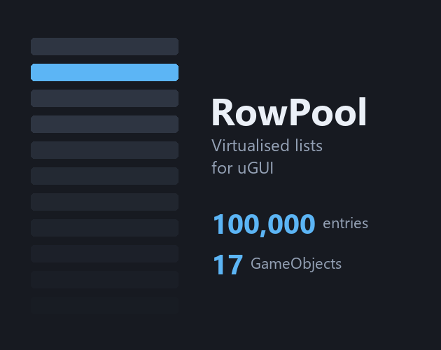

RowPool
Virtualised lists for uGUI. Only the rows on screen exist.

A ScrollRect slows to a crawl long before your data does. Ten thousand rows means ten thousand GameObjects, ten thousand layout passes and a frame time nobody wants to look at.
RowPool fixes that without asking you to rebuild anything around it:
RowPool.Attach(scrollRect, rowPrefab, data.Count,
(i, view) => view.GetComponent<Row>().Set(data[i]));That is the whole integration. No interface to implement, no delegate object, no base class your row has to inherit from. Your prefab, the scripts on it and your hierarchy stay exactly as they are. If you already have a ScrollRect filled by hand, you already have everything.
Why this one
The established solutions in this category are good, and their own reviews say the same thing about them: not a drop in replacement, two or three hours rewiring your brain. They ask you to move your data behind their model. This one asks for one line and leaves your code alone.
What you get
- Rows of different heights, either worked out from your data or measured from the built row. With the first, a jump to entry 90,000 lands on entry 90,000 and the scrollbar is honest from the first frame
- Several prefabs in one list, each with its own pool, so a header never comes back as an entry
- Grids, with columns that divide the width between them or take a fixed size
- Sideways lists, for an inventory strip or a card picker
- Insert and remove that keep the reader's place: add ten entries above somebody who is reading and they do not move
- Chat behaviour that is right in both directions. New messages arrive and the list follows them down, but only while the reader actually is at the bottom
- Gamepad and keyboard focus that survives recycling, chained explicitly so a press never lands on a row parked off screen
- Full C# source, no DLLs, no dependencies beyond uGUI
Measured, not claimed
Positions are worked out from the index and a prefix sum tree, never accumulated while scrolling. Accumulating is what makes long lists drift out of place over a long session, and drift is the defect that is hardest to spot and worst to live with.
109 tests ship inside the package, editor only so they never enter a build. They cover exactly the claims above: that a jump across ten thousand entries lands on the pixel, that every visible index is realised exactly once at any scroll position, and that the visible rows do not move while measured sizes are corrected underneath them. You can run them yourself.
What it is not
A table framework and a data binding system. Sorting, filtering and column widths are yours. A grid uses one cell size throughout, because a line of a grid is only as big as its largest cell and that cannot be known without building every cell on it. These limits are in the manual rather than left to be discovered.
Requirements
Unity 2021.3 or newer with uGUI. No other packages required and none referenced. No shaders or materials, so every render pipeline works.
Where to get it
- Unity Asset Store available now